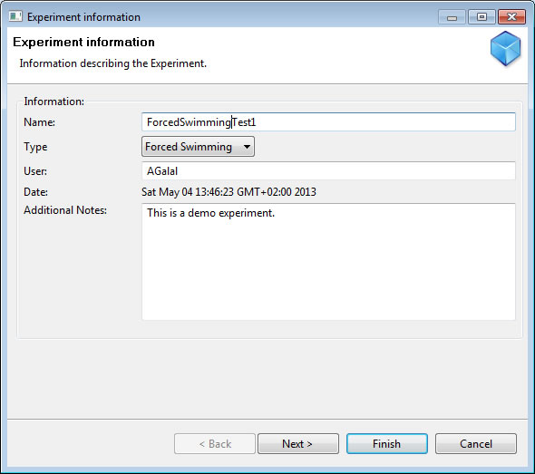
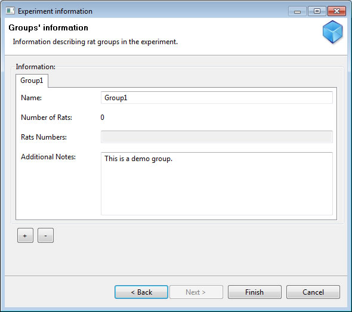

Forced Swimming Test
Definition
From Wikipedia, the free encyclopedia
The behavioural despair test (also called the Porsolt test or forced swimming test) is a test used to measure the effect of antidepressant drugs on the behaviour of laboratory animals (typically rats or mice).
Method:
Animals are subjected to two trials during which they are forced to swim in an acrylic glass cylinder filled with water, and from which they cannot escape. The first trial lasts 15 minutes. Then, after 24-hours, a second trial is performed that lasts 5 minutes. The time that the test animal spends without moving in the second trial is measured. This immobility time is decreased by antidepressants
Support in Behavioral Monitoring Tool
A. Creating Experiment
Steps to create a new Experiment:
- Select menu: Experiment->New Exp.
- Fill in the New Experiment Page as shown in the following snapshot:

- Create at least one Rat Group, as shown in the following snapshot:

- Click Finish
- Save Experiment to a file
B. Start streaming session
Please refer to section Staring Video Stream Session
C. Start tracking session
Please refer to section Staring Tracking Session
D. Export results to Excel sheet
Experiment parameters currently exported to excel:
- Swimming Time
- Floating Time
- Session Time (ST)
Please refer to section Exporting Results to Excel Sheet